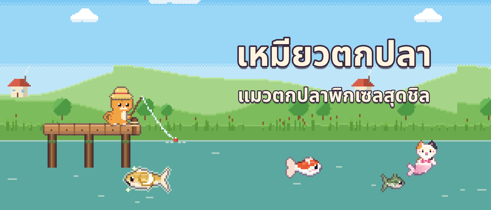
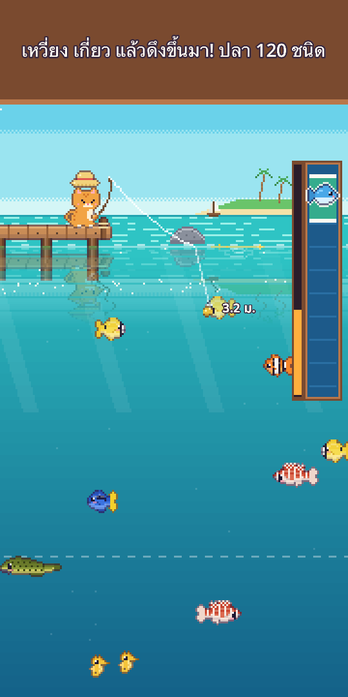
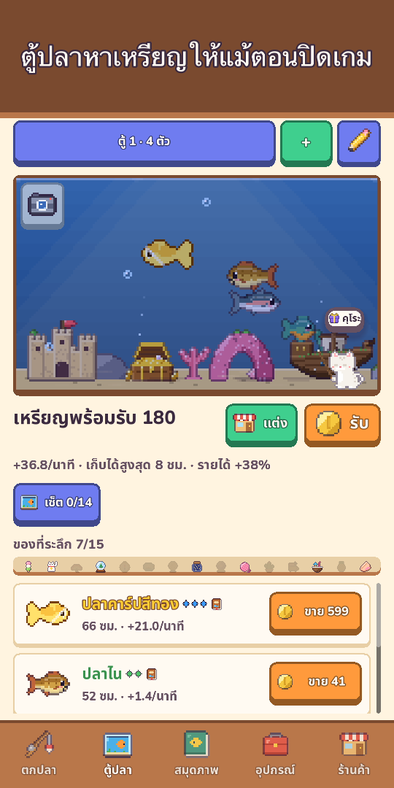
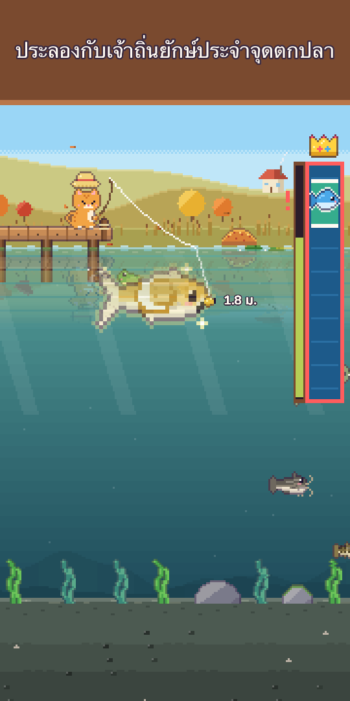
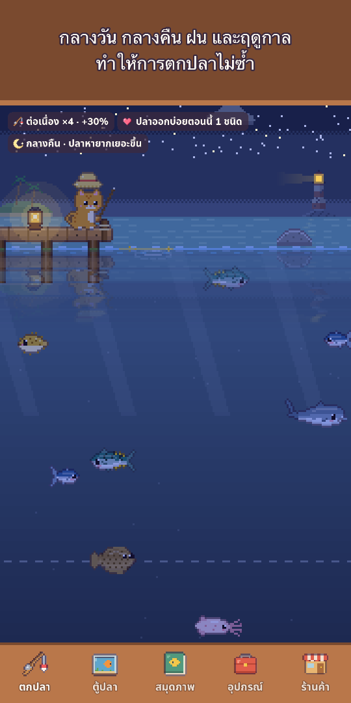
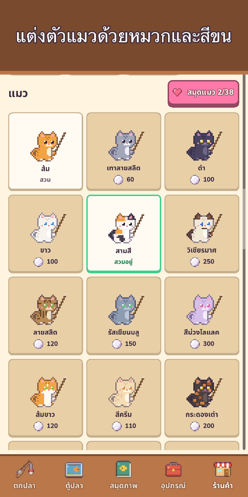
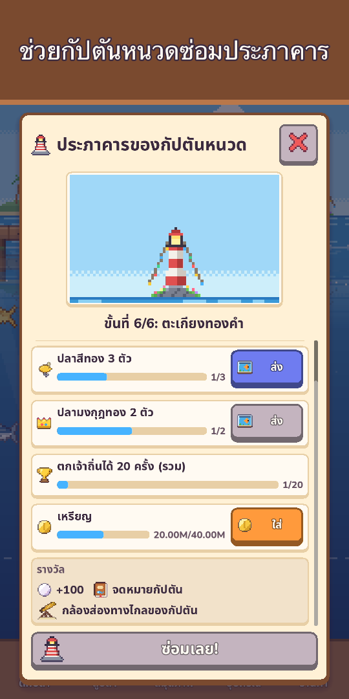
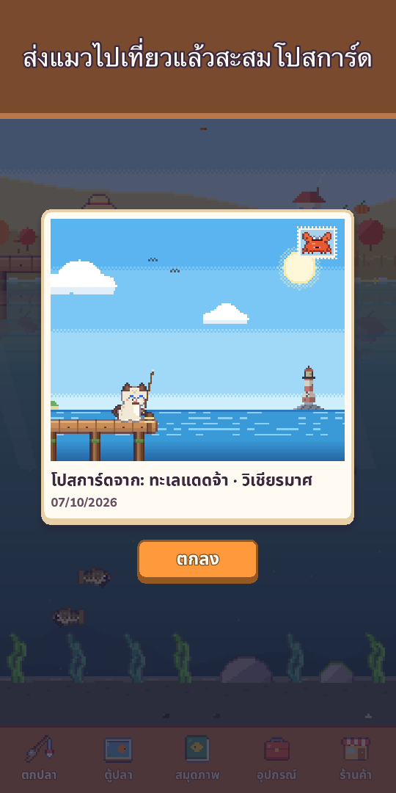

เหมียวตกปลา: ตกปลาพิกเซล
แมวตกปลาพิกเซลสุดชิล
หยิบคันเบ็ดกับชุดดำน้ำแล้วไปกัน! ตกปลา 120 ชนิด ดำน้ำถ่ายรูปสัตว์ทะเล และพบแมวเงือกหายาก








คว้าคันเบ็ดแล้วออกไปตกปลากับเจ้าเหมียวกันเถอะ!
เหมียวตกปลา คือเกมตกปลาภาพพิกเซลสุดอบอุ่น เล่นได้ด้วยนิ้วเดียว กดค้างเพื่อเหวี่ยงเบ็ด ลากเหยื่อไปหาปลาที่มองเห็นอยู่ใต้น้ำ แล้วดึงขึ้นมาด้วยแถบจับปลาที่ให้ความรู้สึกสะใจสุดๆ
- เล่นนิ้วเดียวกดค้างเพื่อเหวี่ยง ลากซ้ายขวาเพื่อนำเหยื่อ กดค้างเพื่อดึง แตะตอนทุ่นจมเพื่อกระตุกเบ็ดให้ได้เปรียบ (ไม่ทำก็ได้) พร้อมวงคลื่น น้ำกระเซ็น แรงสั่น และเหรียญที่ลอยเข้ากระเป๋า
- ปลา 120 ชนิดใน 10 จุดตกปลาบึงทุ่งหญ้า ลำธารภูเขา ทะเลแดดจ้า แนวปะการัง ทะเลสาบน้ำแข็ง ทะเลลึก วิหารใต้น้ำ ทะเลสาบเมฆ เกาะภูเขาไฟ และป่าชายเลน
- ตามล่าปลาสีทองหายาก ฝูงปลาหายาก และปลาระดับตำนานอย่างปลาไนแสงจันทร์และวาฬดวงดาว และประลองกับเจ้าถิ่นยักษ์วันละครั้ง
- ดำน้ำใส่ชุดดำน้ำว่ายสำรวจทุกจุดตกปลา ถ่ายรูปสัตว์ที่ตกไม่ได้เก็บไว้ในอัลบั้มภาพ และใช้ไฟฉายค้นหาถ้ำลึกที่ซ่อนอยู่
- แมวเงือกทุกจุดตกปลามีแมวเงือกหนึ่งตัว หายากยิ่งกว่าปลาในตำนาน รับมาอยู่ในตู้ปลาหรือปล่อยกลับไปเพื่อรับพรนำโชค
- เหยื่อปลอม 25 แบบ 5 ระดับเหยื่อดีดึงดูดปลาหายาก มีเหยื่อพิเศษเรียกแมวเงือกและปลาในตำนาน และปลาตัวแรงอาจทำสายขาดได้!
- ท้องฟ้าที่มีชีวิตกลางวันกลางคืนเปลี่ยนตามนาฬิกา ฝน หิมะ และสายรุ้งเปลี่ยนปลาที่กินเบ็ด แตะดาวตกได้ไข่มุก ฤดูกาลและข้างขึ้นข้างแรมจริงเปลี่ยนทิวทัศน์ ทุกจุดดูพยากรณ์ 6 ชั่วโมงได้ และน้ำระยิบระยับสีทองบอกที่ปลาตัวใหญ่
- สมุดภาพปลาหลายชนิดมีช่วงเวลาโปรด (กลางคืน ฝนตก รุ่งเช้า หรือฤดูกาล) ปลาตัวใหญ่ที่สุดได้มงกุฎทอง และการจับได้ครั้งแรกของแต่ละชนิดจะจำท้องฟ้าวันนั้นไว้ ทั้งเวลา อากาศ ฤดู และจุดตกปลา
- ตู้ปลาปลาช่วยหาเหรียญแม้ตอนที่คุณไม่ได้เล่น แต่งด้วยเรืออับปาง ซุ้มปะการัง และอีกมากมาย สะสมเซ็ตตู้ปลาเพื่อรายได้เพิ่ม แชร์การจัดตู้ปลาด้วยโค้ดสั้น ๆ และแตะปลาเพื่อดูว่าจับได้ที่ไหนและอยู่ด้วยกันมากี่วันแล้ว
- ชีวิตแมวและการสะสมหมวกตั้งแต่หมวกกบถึงมงกุฎ สีขน หมวกตามฤดูกาล และมุมแมวแสนอบอุ่น ส่งแมวในครอบครัวไปเที่ยว 3 ชั่วโมงเพื่อรับโปสการ์ดพิกเซล และอ่านบันทึกของแมวเมื่อกลับมา
- เพื่อนบ้านและเทศกาลแมวเพื่อนบ้านแวะมาเยี่ยมตู้ปลาและฝากของที่ระลึก ความสนิทที่เพิ่มขึ้นปลดล็อกบทพูดใหม่ ของขวัญเล็ก ๆ และหมวกเพื่อนซี้ ทัวร์นาเมนต์ประจำสัปดาห์ ตกปลาด้วยกันทุกเดือน ปลาแขกประจำสัปดาห์ และ 5 เทศกาลทุกปี (ซากุระ ฤดูร้อน ฮาโลวีน คริสต์มาส ปีใหม่) สะสมแสตมป์แลกของแต่งพิเศษที่อยู่กับคุณตลอดไป
- อ่านจดหมายในขวดจากกัปตันหนวด แมวแก่ผู้เฝ้าประภาคาร แล้วช่วยซ่อมประภาคารทีละขั้น
- เติบโตตามจังหวะของคุณอัปเกรดคันเบ็ด รอก สายเอ็น เหยื่อ และตู้ ทำเหยื่อจากปลาที่จับได้เพื่อล่อปลาชนิดนั้น (ยกเว้นปลาตำนาน) พร้อมภารกิจประจำวัน ของขวัญประจำวัน (ขาดไปวันหนึ่งก็ไม่เริ่มใหม่) และของขวัญตามวันที่อยู่ด้วยกัน
- ของแถมแสนชิลโหมดชมวิวซ่อนปุ่มให้นั่งดูทิวทัศน์เพลิน ๆ อัลบั้มรูปในบันทึกตกปลาเก็บรูปตู้ปลาและมุมแมว 12 รูปล่าสุด และทุกวันมีเพื่อนตัวน้อยแอบอยู่ในฉาก หาเจอรับไข่มุก
- เล่นแบบออฟไลน์ได้ทุกที่ทุกเวลา
เล่นฟรี มีซื้อในเกมแบบไม่บังคับ: แพ็กไข่มุก แพ็กเริ่มต้น และแพ็กผู้สนับสนุน (รับรางวัลโดยไม่ต้องดูโฆษณา หมวกมงกุฎ และขีดจำกัดรายได้ออฟไลน์สองเท่า) ตกปลาครบทั้ง 120 ชนิดได้โดยไม่ต้องเสียเงิน
ไม่มีโฆษณาบังคับ ไม่มีแบนเนอร์ โฆษณามีแค่แบบรับรางวัลที่คุณเลือกดูเอง เช่น ขายปลาได้เงินสองเท่า
ผ่อนคลาย เหวี่ยงเบ็ด แล้วมาดูกันว่าวันนี้ปลาอะไรจะมากินเหยื่อ!